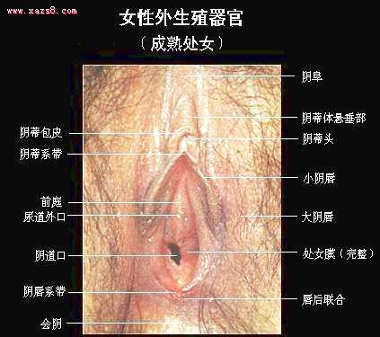
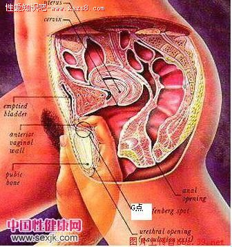

一、蚕缠----女性仰卧，双手抱住男性的颈部。男的同样的俯下，或手入在女性的颈部，跪在女性的大腿中间，把阴茎插入。
二、龙宛转----女的仰卧，双腿弯曲，男的跪在女的大腿中间，用左手按住女的双腿，让双腿碰到乳房，用右手把阴茎插入阴道。
三、鱼比目----男女面对面仰卧，女性将上面的腿置于男性身上，然后亲吻，男的将双腿伸直，用手抬着女性的大腿，把阴茎插入。
四、燕同心----女的仰卧，双腿伸直，男性伏在女的身上，用双手抱住女性的颈。女的要双手抱住男性的腰，以这种姿势，把玉茎插入丹穴。
五、翡翠交----女的仰卧，把脚抬高，男的在女的双腿中间，把脚张开跪着，用双手抱着女性的腰部，把玉茎插入。
六、鸳鸯合----女的仰卧，男的在女方的侧面，两脚都要抬高。此时，女性其中一脚放在男的腿上，男的单膝跪立。
七、空翻蝶----男的仰卧，双腿伸直。女的面向男的，骑在男的身上，一脚放下，一脚抬高，迎接阳峰进入玉门之中。
八、背飞凫----男的仰卧，双腿伸直。女的背对男的跨坐，女的脚必须着床，低下来握住阴茎，把它送入丹穴中。
九、偃盖松----女的仰卧，双腿交错夹住男性的腰部。男性用手抱住女性的腰部，女的则用双手缠住男的颈部牢牢插入
十、临坛竹----男女其中一个仰卧，一人俯卧在对方身上，仰卧的人双腿要提高，俯卧的人要骑在上面，双方的性器相对。
女性外生殖器指生殖器官的外露部分，又称外阴。包括阴阜、大阴唇、小阴唇、阴蒂、前庭、前庭大腺、前庭球、尿道口，阴道口和处女膜。
?
一、阴阜。为耻骨联合前面隆起的外阴部分，由皮肤及很厚的脂肪层所构成。青春期皮肤上开始生长阴毛，分布是尖端向下的三角形。
二、大阴唇。为外阴两侧、靠近两股内侧的一对长圆形隆起的皮肤皱襞。前连阴阜，后连会阴；由阴阜起向下向后伸张开来，前面左、右大阴唇联合成为前联合，后面的二端会合成为后联合，后联合位于肛门前，但不如前联合明显。大阴唇外面长有阴毛。皮下为脂肪组织、弹性纤维及静脉丛，受伤后易成血肿。未婚妇女的两侧大阴唇自然合拢，遮盖阴道口及尿道口。经产妇的大阴唇由于分娩影响而向两侧分开!
三、小阴唇。是一对粘膜皱襞，在大阴唇的内侧，表面湿润。小阴唇的左右两侧的上端分叉相互联合，其上方的皮褶称为阴蒂包皮，下方的皮褶称为阴蒂系带，阴蒂就在他们的中间。小阴唇的下端在阴道口底下会合，称为阴唇系带。小阴唇粘膜下有丰富的神经分布，故感觉敏锐。另外值得提醒的是触摸阴唇和阴蒂也能使女性到达高潮.
四、阴蒂。位于两侧小阴唇之间的顶端，是一个长圆形的小器官，末端为一个圆头，内端与一束薄的勃起组织相连接。勃起组织是一种海绵体组织，有丰富的静脉丛，又有丰富的神经末梢，故感觉敏锐，受伤后易出血。女子的阴蒂相当于男子阴茎的龟头。
五、前庭。两侧小阴唇所圈围的棱形区称前庭。表面有粘膜遮盖，近似一三角形，三角形的尖端是阴蒂，底边是阴唇系带，两边是小阴唇。尿道开口在前庭上部。阴道开口在它的下部。此区域内还有前庭球和前庭大腺。
阴道口由一个不完全封闭的粘膜遮盖，这粘膜叫处女膜。处女膜中间有一孔，经血即由此流出。处女膜孔的大小及膜的厚薄各人不同。处女膜破后，粘膜呈许多小圆球状物，成为处女膜痕。处女膜不能说明什么。
六、前庭球。系一对海绵体组织，又称球海绵体，有勃起性。位于阴道口两侧。前与阴蒂静脉相联，后接前庭大腺，表面为球海绵体肌所覆盖。受伤后易出血。
七、前庭大腺又称巴氏腺。位于阴道下端，大阴唇后部，也被球海绵体肌所覆盖。是一边一个如小蚕豆大的腺体。它的腺管很狭窄，约为1.5～2厘米,开口于小阴唇下端的内侧，腺管的表皮大部分为鳞状上皮，仅在管的最里端由一层柱状细胞组成。性兴奋时分泌黄白色粘液，起滑润阴道口作用，正常检查时不能摸到此腺体。
八、尿道口。介于耻骨联合下缘及阴道口之间，为一不规则之椭圆小孔，小便由此流出。其后壁有一对腺体，称为尿道旁腺，开口于尿道后壁，常为细菌潜伏之处。
阴蒂在两片小阴唇前方的汇合处，平时有包皮覆盖，不明显，性兴奋时会勃起，显露出来。G点是一部分人的说法，位置大致在阴道入口二、三公分的前壁处，像钱币一样大小，每人的位置可能稍有差异，据说是敏感区,只要你能找到,稍微触摸一下就能让女性高潮不断!
